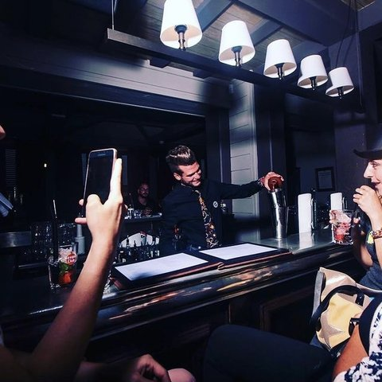
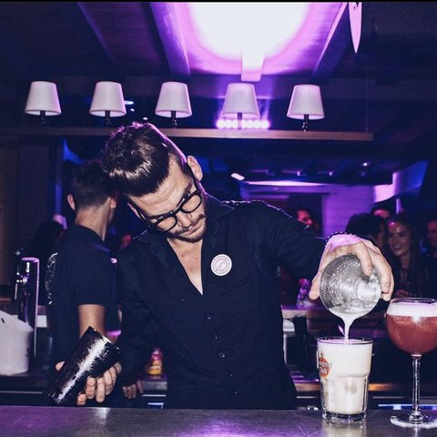
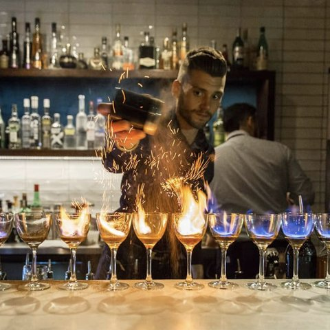
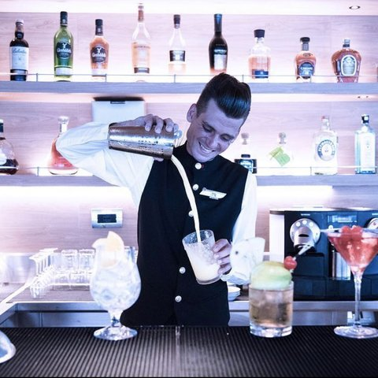
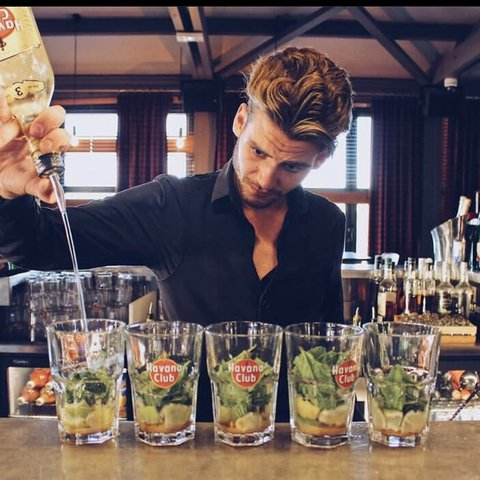

A content creator and social media manager working with hospitality brands - impactful content and storytelling that turns venues into
stories people stop for, built on consistency across Instagram, TikTok and beyond.
1
Active client - AMANO Group
3
Years in social media & marketing management
5
Years in content creation
Growth figures shown are organic. Paid campaigns are run in collaboration with a paid media agency.
Currently working with AMANO Group, a hotel chain with a rooftop bar overlooking London. Past work spans a modern French restaurant chain and a group of three very different London pubs - each with its own crowd, its own rhythm, and its own story to film.
Every project starts on location: real venues, real teams, real product. The focus is always the same - impactful content, storytelling that lands, and consistency that keeps a brand showing up in the feed, not just interrupting it.
The journey so far
Before the reels and rooftop bars, there was an actual bar. I cut my teeth managing bars across the French Riviera and the Alps - Saint-Tropez, Courchevel, then Deauville in Normandy - before heading behind the bar on a five-star cruise ship and later in Melbourne, Australia. Back in London, hospitality management at Aubaine Mayfair turned into a move behind the camera: two years leading social media and events for Aubaine, and now social media & marketing manager at AMANO Covent Garden. Fourteen years, four countries, one throughline - understanding what makes people show up, stay a while, and come back.
Saint-Tropez & Courchevel, France
Deauville, Normandy
5★ Cruise Ship
Melbourne, Australia
London, UK





Back in the days